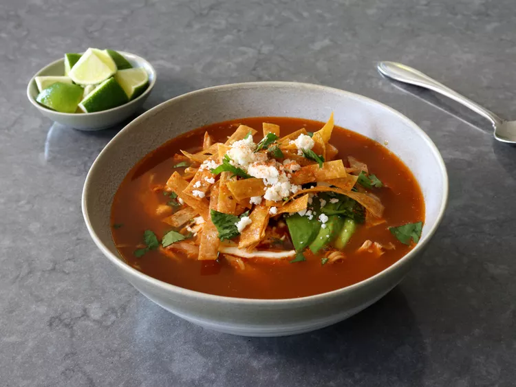

Home
Chicken Tortilla Soup

Description
The greatest chicken soup experience known to man. The smoky, spicy, slowly simmered tomato chicken broth made from scratch gives an authentic flavor to the soup, while the garnishes add a zesty cinch to the soup. The toasted tortilla strips, sour cream, avocado, cilantro, lime, and crumbled Mexican cheese mix together in your mouth to produce a novel, unique flavor that leaves you wanting more. All this in only 6 hours and 15 minutes of cooking.
Ingredients
- 1 (4 1/2 pound) whole chicken
- 3 white onions, halved, divided
- 1 bunch cilantro, rinsed well
- 2 bay leaves
- 1/2 teaspoon whole black peppercorns
- 1 teaspoon Mexican oregano
- 2 dried chili pepper pods, seeded (optional)
- 3 quarts water
Tortilla Strips
- 12 corn tortillas
- 1/4 cup vegetable oil
- 1/2 teaspoon kosher salt
Charred Vegetable Salse
- 3 large tomatoes
- 1 sweet red pepper, halved and seeded
- 1 large or 2 small jalapeno peppers, halved and seeded
- 6 garlic cloves, peeled
- 1 whole canned chipotle pepper in adobo sauce (optional)>
To Finish
- 1 teaspoon ground cumin
- 1 lime, juiced
Garnishes
- sour cream
- sliced avocado
- chopped cilantro
- shredded or crumbled Mexican cheese, such as cotija
- lime wedges
- sprinkle of cayenne pepper
Steps